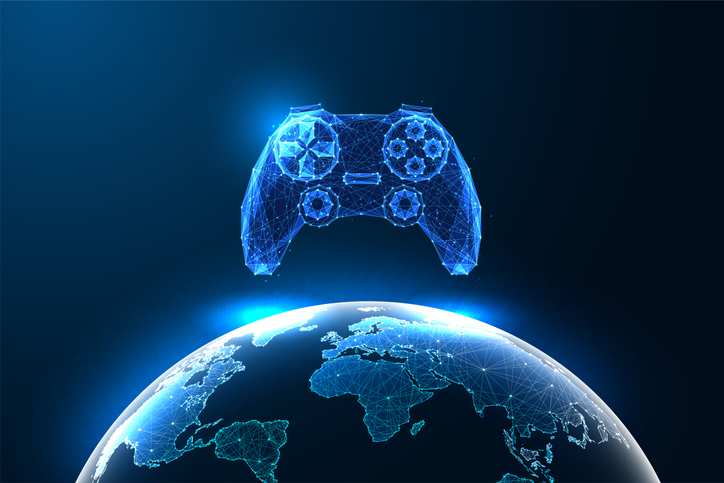
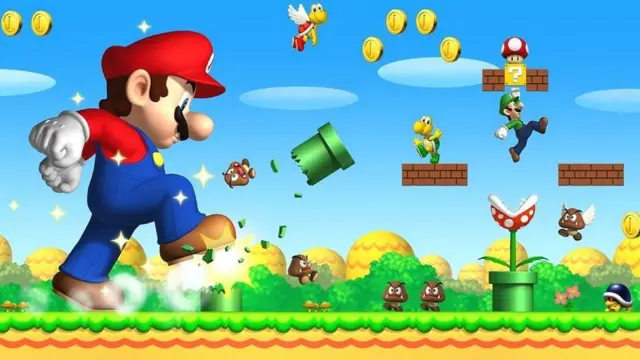

es una industria global de entretenimiento masivo y un fenómeno cultural complejo que combina tecnología, arte narrativo y diseño interactivo. Abarca desde consolas (Sony, Nintendo, Microsoft) y PCs hasta dispositivos móviles, fomentando la inmersión, el aprendizaje y la socialización en línea

Pasaron de ser pasatiempos simples a productos culturales que simulan realidades, educan y entretienen.
Es un sector económico de rápido crecimiento, superando en ingresos a la industria del cine y la música, con una gran diversificación en consolas, PC y móviles
Super Mario Bros. Tetris Minecraft Grand Theft Auto V Fortnite League of Legends The Legend of Zelda: Breath of the Wild Call of Duty: Modern Warfare Pokémon Red and Blue The Last of Us
es uno de los videojuegos más importantes de la historia y el que convirtió a Mario en el personaje más famoso del mundo gamer. Fue lanzado en 1985 por Nintendo para la consola NES, y su historia es simple: controlas a Mario, un fontanero que debe rescatar a la princesa Peach del villano Bowser, atravesando mundos llenos de enemigos, saltos y secretos.
